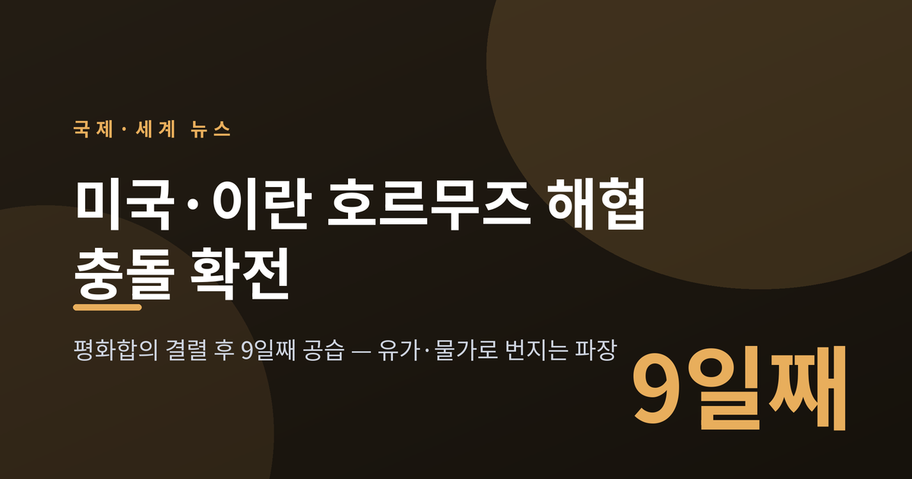
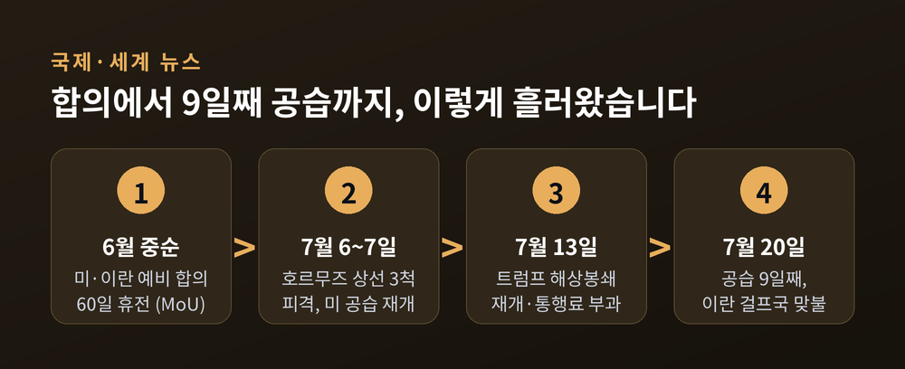
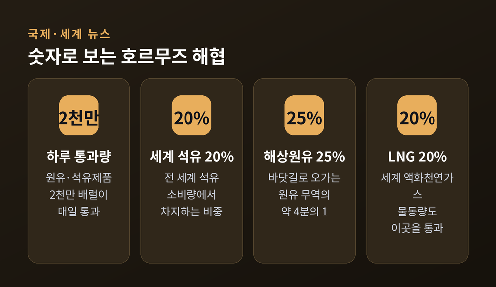
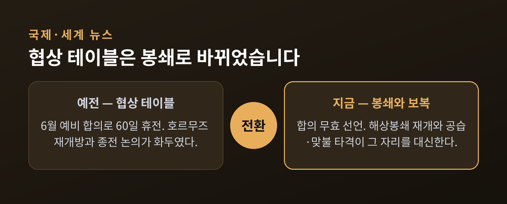
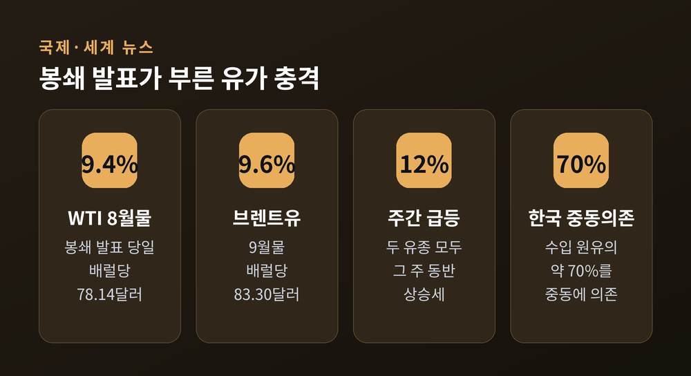
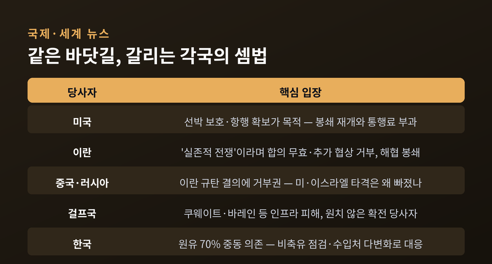

이번 글에서는 2026년 7월 중동에서 다시 불붙은 미국과 이란의 무력 충돌을 정리해 보겠습니다. 평화합의가 무너진 뒤 공습이 9일째 이어지고, 좁은 바닷길 하나가 세계 경제를 흔들고 있습니다. 무슨 일이 있었고, 왜 중요하며, 앞으로 어떻게 흘러갈지 차분히 짚어보겠습니다.

시작은 상선이었습니다. 7월 6일과 7일, 호르무즈 해협을 지나던 상선 3척이 공격을 받았습니다. 카타르 국적의 액화천연가스(LNG) 운반선과 사우디아라비아 유조선 등이 포함됐고, 이란의 소행으로 추정된다는 보도가 이어졌습니다.
미국의 대응은 빨랐습니다. 7월 7일 이란 표적 약 80곳, 9일 약 90곳을 공습했다고 밝혔습니다. 아살루예·부셰르·반다르아바스 등 주요 에너지·군사 기지에서 연쇄 폭발이 보고됐습니다. 미군은 이번 주 3차 라운드에서만 군사표적 약 140곳을 타격했다고 발표했습니다.
이란도 물러서지 않았습니다. 걸프 지역의 미군 시설로 맞불을 놓았습니다. 이란 혁명수비대는 쿠웨이트 내 미군 조기경보레이더와 MQ-9 리퍼 드론 격납고를 파괴했다고 주장했습니다. 쿠웨이트 발전·담수시설을 다시 공습하는 등, 타격 대상을 걸프국의 민간 인프라로까지 넓혔습니다.
VOA는 7월 20일자로 미국의 공습이 9일 연속 이어지고 있다고 전했습니다. 트럼프 미국 대통령은 이를 "전사한 미군을 기리는 공격"이라고 표현했습니다. 이라크에서 미군이 추가로 전사했다는 보도도 나왔습니다.
사상자 수치는 조심스럽게 볼 필요가 있습니다. 이란 보건부는 적대행위 재개 이후 미국 공습으로 최소 46명이 숨지고 400명 이상이 다쳤다고 주장했습니다. 이란군은 남동부 이란샤흐르 인근 병영 피격으로 군인 7명이 사망했다고 밝혔습니다. 다만 이 숫자들은 대부분 각 당사국·당국의 발표이며, 독립적인 검증은 아직 제한적입니다.

호르무즈 해협은 페르시아만과 바깥 바다를 잇는 좁은 통로입니다. 이 길의 무게는 숫자로 드러납니다.
미국 에너지정보청(EIA)에 따르면, 하루 약 2,000만 배럴의 원유와 석유제품이 이곳을 지납니다. 전 세계 석유 소비의 약 20%에 해당합니다. 해상 원유 무역으로 보면 약 25%가 이 해협을 통과합니다. 액화천연가스도 세계 물동량의 약 20%가 여기를 지나갑니다.
문제는 대체 통로가 마땅치 않다는 점입니다. 사우디아라비아와 아랍에미리트(UAE)는 해협을 우회하는 파이프라인을 일부 갖고 있습니다. 그러나 이란·이라크·쿠웨이트·카타르·바레인은 원유 수출의 대부분을 이 좁은 길에 의존합니다. 통로 하나가 막히면 여러 나라의 수출이 동시에 묶입니다.
그래서 호르무즈는 종종 세계 에너지의 '급소'로 불립니다. 이란이 반복해서 "해협 봉쇄"를 꺼내 드는 이유이기도 합니다. 좁은 바닷길 하나가 곧 협상 카드가 되는 셈입니다.

이번 충돌을 이해하려면 몇 달 전으로 돌아가야 합니다.
이 전쟁의 뿌리는 2026년 2월 28일입니다. 미국과 이스라엘 연합이 이란의 핵·미사일 시설과 지도부를 겨냥해 대규모 선제 타격을 가했고, 이 과정에서 이란 최고지도자 알리 하메네이가 사망했습니다. 이란은 이스라엘과 미군기지, 걸프 아랍국들로 보복에 나섰고, 3월에는 호르무즈 해협 '폐쇄'를 선언했습니다.
지루한 공방 끝에 6월 중순, 양측은 예비 합의에 도달했습니다. 60일간의 휴전, 호르무즈 재개방 등을 담은 양해각서(MoU)였습니다. 다만 이것은 최종 평화협정이 아니라, 남은 쟁점을 더 논의하기 위한 초기 틀이었습니다.
이 얇은 합의는 오래가지 못했습니다. 6월 25일 이란 드론이 화물선에 충돌한 사건이 도화선이 됐고, 7월 초 상선 공격과 미국의 공습 재개로 휴전은 붕괴했습니다. 트럼프 대통령은 7월 13일 해상봉쇄 재개와 통행료 부과를 발표했습니다. 이란 국회의장 갈리바프는 7월 15일 "미국과의 실존적 전쟁"이라며 합의는 무효이고 추가 협상 계획은 없다고 못 박았습니다.
예전엔 '협상 테이블'이 화두였습니다. 지금은 '봉쇄와 보복'이 그 자리를 대신하고 있습니다.

지정학의 파동은 결국 가격표로 돌아옵니다.
트럼프 대통령이 봉쇄 재개와 통행료 부과를 발표한 직후, 유가는 크게 뛰었습니다. 서부텍사스산원유(WTI) 8월물은 하루 만에 9.4% 오른 배럴당 78.14달러, 브렌트유 9월물은 9.6% 오른 83.30달러로 마감했습니다. 그 주 두 유종 모두 약 12% 상승해, 일부 매체는 '6년 만의 최대폭'이라고 전했습니다.
한국에는 남 일이 아닙니다. 한국은 수입 원유의 약 70%를 중동에 의존하는 구조입니다. 고유가와 고환율이 겹치면 수입물가와 기업의 원가 부담이 커집니다. 이미 3%대로 올라선 물가를 더 밀어올려, 가공식품·외식비 같은 생활물가로 압력이 번질 수 있다는 우려가 나옵니다.
정부의 대응 카드는 정해져 있는 편입니다. 전략비축유 점검과 방출, 중동 수입처 다변화, 외교적 노력 강화 등입니다. 다만 근본적으로 호르무즈 의존도를 낮추는 일은 짧은 시간에 끝나지 않습니다.

같은 바닷길을 두고, 나라마다 셈법이 다릅니다.
미국은 공습과 봉쇄가 호르무즈를 지나는 선박을 보호하고 항행을 확보하기 위한 것이라는 입장입니다. 이란은 이를 침략으로 규정하며, "실존적 전쟁"이라는 표현으로 물러서지 않겠다는 뜻을 분명히 했습니다.
강대국의 시선도 엇갈립니다. 중국과 러시아는 앞서 이란의 공격 중단을 촉구한 유엔 결의안에 거부권을 행사한 바 있습니다. 미국·이스라엘의 이란 타격은 언급하지 않은 편향된 결의라는 이유였습니다. 다만 중국은 "항행의 자유 보장은 국제사회의 공통된 요구"라는 원론적 입장도 함께 내놓았습니다.
가장 곤란한 쪽은 걸프 국가들일지 모릅니다. 쿠웨이트·바레인처럼 미군 시설과 민간 인프라가 잇달아 피해를 입으며, 원치 않아도 확전의 당사자로 끌려 들어가고 있습니다.

지금으로선 두 갈래 길이 보입니다.
하나는 재협상입니다. 합의가 무효화됐다고는 하나, 이를 되살리려는 물밑 시도가 완전히 끊겼다고 보기는 어렵습니다. 전면전은 양측 모두에게 큰 부담이기 때문입니다. 다른 하나는 확전입니다. 봉쇄와 보복이 맞물리며 통제선을 넘는 순간, 사태는 걸프 전체로 번질 수 있습니다.
분명한 것은 이 충돌이 중동만의 문제가 아니라는 사실입니다. 좁은 해협 하나가 흔들릴 때, 그 진동은 유가와 물가를 타고 우리 식탁까지 닿습니다.
끝으로 한 가지만 덧붙이겠습니다. 이 사안은 어느 한쪽을 선악으로 단정하기 어렵습니다. 서로 다른 이해와 두려움이 부딪히는 자리이기 때문입니다.
"바닷길은 좁아도, 그 파장은 결코 좁지 않습니다."
당분간은 이 좁은 바다에서 눈을 떼기 어려울 듯합니다.
</content>